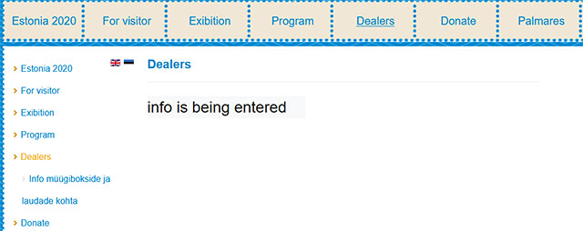
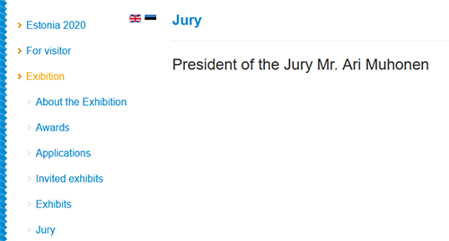
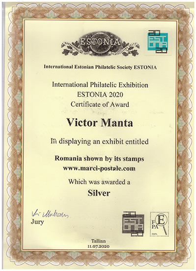
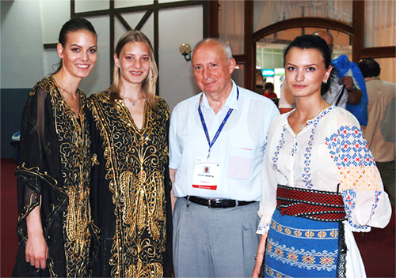

Flawed Websites Competition @ Estonia 2020
Victor Manta, PWO
Introduction
In June 2020 I learned with regret that the exhibition LONDON 2020 has been rescheduled for the beginning of 2022. This led me to withdraw from its competition of websites and make returned my fees, paid a long time ago.
Without waiting for being refunded, I searched for another competition of philatelic sites, from 2020, and found one competition for which the registration was still open, the Estonia 2020. My goal was the same one as usually, to participate in it and then to report on PWO's website my impressions about this exhibition.
Competition's Advantages
The immediate advantage of this competition was that I was not required to be a member of any official philatelic organization. I did not have to go through any national commissioner, as it was the case for LONDON 2020, and I could pay my $30 participation fee per PayPal. I applied, filling out an online form, and I was accepted very quickly, but I was asked to fill out a second form, which I did. So far so good!
Application Process
I filled out the first form again, because I found that I placed something wrong in my address earlier. On this occasion I have informed by email Estonia 2020's General Commissioner, Oliver Hanschmidt (O.H.), that the second series of completed forms is the correct one.
First Organizer's Mistake and His Later Reaction
Here is the place to mention that OH did not consider my notice and sent me after the exhibition the materials (diploma and commemorative medal) at the wrong address. After two months, after receiving his envelope back, and after I have pointed out his error, he sent the letter again. Consequence: over two months after the closing of the exhibition (July 12) I finally received (on Sept. 28) the second package sent by O.H. Annoying
This incident did not prevent the communicator OH from writing to me "(...) You are the worst person ever i have been had to write to." To complete the painting, not to forget what else he wrote to me, without hiding his mischievous satisfaction: « (...) just see the big picture your web page was at this exhibition the worst in the website class!." Luckily, I do not care how I was ranked among the only three (!) sites that participated, the purpose of my participation being a different one. What I discovered largely exceeded anyone 's darkest expectations.
I will return later to O.H.'s communicator capacities and the quality of information he has provided to me.
The Exhibition's Site & the Role of Its Communicator
In the Regulations of the exhibition it is specified that:
11. Obligations for Exhibitors. All communication between an exhibitor in a Competitive Class and the Organizing Committee or the jury shall go through the general commissioner. ( ) Source
I complied with that requirement, although I could have written to the jury's chairman, but each one with his own duties.
One reason I had to ask for a lot of information, after I entered the contest, is the extremely poor quality of the exhibition's website. The question how an exhibition that contains a contest of websites can afford to have a such a bad, misleading (see below) website, and one that lacks so many things is justified. Please look at the image below, which shows an excerpt of Estonia 2020 website:

It stands out that even two months after the exhibition closed, the information about Dealers "is being entered". Were there any dealers in this exhibition? If so, who they were and what were they dealing with?
It is also worth noting the structure of the menu. For unknown reasons, it repeats itself redundantly horizontally, and on the left side vertically. Once opened on the left, on Dealers, there are menu points below in Estonian, where if you click, you wake up in the Estonian version of the site, where you get lost forever. †
The Role of the Jury & of Its Chairman
How could the president of the jury, Ari Muhonen (A.M.), about the existence of which we learn from another page, accept such a site, and at the same time he is criticizing the sites of exhibitors for minor, or even non-existent things? It seems to be true the proverb (slightly modified by me): Who knows, does, and who does not, judge others...
I learned about the jury from the page of the Estonia 2020 site (below):

How many have heard of this judge? I have not, and when I asked Estonia's 2020 General Commissioner, Oliver Hanschmidt, at how many philatelic website contests did Mr. Ari Muhonen participate, what prizes he was awarded and how many contests of philatelic websites he judged, here's what I learned:
Literature class will be judged by Ari Muhonen. Ari is a FIP judge in literatre and postal history. You know Ari is well qualified to judge websites.
Well, from O.H. I have not been able to find out anything new and/or enlightening, no matter how hard I have tried. O.H. did not want to tell me either who are the other members of the jury or what qualifications do they have or give me their email addresses. He did not know if there were also any consultants involved. From the site itself I could not learn who are the judges and how they looked like, which would be maybe characteristic for North Korea, but it is not typical of Estonia, a country known for its opening and welcoming.
The reason for the lack of answers to my journalistic questions is that there is no such thing as a qualification of FIFA / FEPA judges for judging websites, these organizations wrongly considering that quite any judge of philatelic literature is qualified to judge websites too. This claim is false and this will be shown on concrete examples in what follows.
The Chairman's Experience
As for Mr. Ari Muhonen's experience, I found on the web (source: https://fepanews.net/?s=Muhonen) that he is the webmaster of FEPA's official site. Considering that Estonia 2020 received the patronage of the FEPA (14. February 2020 FEPA recognized the Estonia'20 philatelic exhibition: Source - just in time!) it is easy to recognize some tight connections here. It looks obvious that the fact that A.M. is the webmaster of the site of the patronizing organization (FEPA) explains his position but does not make of him an expert in judging philatelic websites!
The Awards
But back to the pieces of information presented on the Estonia 2020 site.
Excerpt for Estonia 2020 website: Participants of all classes will be awarded an exhibition medal. Source
Excerpt from the Regulations:
9. Medals, Prizes and Diplomas
6. For classes 2.1 2.9 and 2.11 the following medals are available: Gold, Large Vermeil, Vermeil, Large Silver, Silver, Silver Bronze and Bronze; SourceReading the rows quoted above, it can be understood that two medals will be awarded, one for participation and another one related to classification (diploma). The texts are misleading, because in fact it was sent a single, participation medal. Moreover, OH's reaction is yet another example of rudeness on the part of General Commissioner, the one and only communicator of the exhibition: " (...) not waist my time with questions what answers you already know or I have given to you.
Below I present the certificate received by me by email from O.H. It is a scan, received after my request, originally of a document without signature, and later replaced by one signed:

Fig. 1. "Silver" something awrdedI asked O.H. who signed my Certificate and with which prerogatives (as president of the jury, as a member, as what else) and why is this not specified on the Certificate?
Here is the nice answer I received from OH: "(president of the jury Ari Muhonen and you can't say what needs to be on our certificate of our exhibition)." In my opinion, n o further comments are necessary.
It is expected that the certificate was signed by the jury's chairman and not in the name of an unspecified "Jury". The name, position, and signature of the chairman of the organizing committee would also have been welcome on the certificate, but this means asking too much from such superficial organizers.
I asked O.H.: I suppose that I was awarded a silver medal. Why is this not specified on the Certificate? Here is his answer: Please read to the end of the Certificate - Which was awarded a Silver ( ).
It is true, the certificate says "Silver", but the magic word "medal" is missing, either inadvertently, or perhaps that the participants do not ask for medals... Or maybe it is about a silver bullet and not an award? :-)
Lack of the Usual Images on the Estonia 2020 Site
A good question is why there are no images on the exhibition's site, for example of sales boots, children's workshop or from the awarding and closing ceremony? A photo of the organizing committee and another one of the members of the jury, with names and positions, would also have been welcome, otherwise it gives the impression that it was a ghostly or imaginary or only online exhibition .
"My" Jury, My Site and My Credo
But let us end with the information found or not on the site, or received from the official communicator of the exhibition, and move to what Judge Ari Muhonen (A.M.) wrote about my website, the one that at two previous international exhibitions, in 2018 and 2019, received the rewards Vermeil and Large Vermeil. The full text is published below in the Appendix. Here I try to be succinct, to quote only some excerpts and to add my comments on them.
A.M. "Stamps are used to illustrate stories inspired by them."
V.M. Many more recently presented stamps talk about events that are more or less known, that I reveal or remind on my site. Their history is strongly related to the epoch in which they appeared. Very (too) many of those who remember the exact circumstances to which the stamps refer to cannot be contacted anymore, but the stamps continue to exist and for this reason to reveal more than can be found about them in catalogues is justified, being as well useful as desirable. Thus, many stamps give an image, like it or not, about the country I know, and love, and sometimes hate large fragments of its totalitarian past. That is why I named my site Romania as Shown by Its Stamps, and if some do not like my approach to the past and to the stamp collecting means only that it is not for them. In my opinion, there are things more important in philately than just paper, perforation, gum, rarity, big money and small fly specks on the portrait of the emperor.And I am not alone in this. The most recent member of the PWO (who joined with his 399th site) wrote to me: My two favorite things are stamps and history. They go together so well in my opinion. I am glad to find there are others with those same passions. Yes, Will, there are here others like you!
A.M. The site gives an impression, that the technology behind it has not been updated as frequently as its contents.
V.M. The site is updated yearly several times. I have no trouble at all to add new pages or to modify the old ones. Running for novelty just for modern web presentation is useless and is distracting me from my main purpose, which is the quality of the contents.A.M. The layout looks old fashioned, the homepage is static and has only two links to the contents in Romanian or English, the menu on the left side of the main page is a long list of links to subpages. This could be enhanced with updated website technology.
V.M. The choice of language is made on the entry page, what is enough. The links that appear afterwards are placed in a hierarchical structure, with a first level consisting of only five links. I see no need to enhance whatever it is, because the existing menu can be expanded as much as desired. Incidentally, this site has been on the web for 20 years and it served its purpose.Did judge A.M. imagine that 20 years ago I knew what I was going to write about after several years? False! Some of the stamps on which I have commented over the years had not even appeared when I published my website.
A.M. The topics are classified under a few main categories, but the substructure seems random. At least the jury didn't find the logic in there.
V.M. It is not random at all, he just had to look more attentively and without prejudice. Besides, which "Jury" is he talking about? Only one name appears on the site, namely that of the chairman ...A.M. Most pages on the site tell a story relating to Romania, not the stamps themselves. The stamps seem just to illustrate the story without direct connection to the text. Therefore it is hard to find the philatelic relevance of many of the stories.
V.M. This is an essential point of disagreement between me and A.H. It shows the difference of opinion between a representative of FIP (International Philatelic Federation) and/or FEPA (Federation of European Philatelic Associations), surpassed by the evolution of philatelic websites, as the one opposed to a creator for two decades of such sites, and president without interruption of the Philatelic Webmasters Organizations (PWO, pvmo.org), which counts almost 400 members. It is an evolution with which FIP failed to keep up and even abandoned the attempt for over 15 years, now trying to catch up with the train that left FIP far behind.
Besides, how could this judge have a sufficiently deep knowledge for many of the topics dealt by my site, when he lacks the experience of life, language, and philately, the one that I acquired by living and collecting Romanian stamps in Romania? It is a country with a complex history, from which I cover stamps for the periods of two successive dictatorships (fascist-like and communist), each one with many events and facts that were hidden and/or were misinterpreted by the ferocious propaganda of these regimes of very sad memories.
Conclusions & Future Websites' Competitions
The only consolation is that in all those 21 years since the official philately started its websites contests, they were declared by FIP as experimental and can therefore be considered as an area of experimentation and learning for all, including for the FIP / FEPA officials. Philatelic webmasters created in the meantime and published what and how they wanted, in all freedom, ignoring the lethargy of the official philately, which was of no real use to them, even on the contrary, as seen in the extreme case of the Estonia 2020 websites competition. Fortunately, future participants will not often meet a communicator as rude and incompetent as Mr. Oliver Hanschmidt and/or a chief judge as omniscient and peremptory as Mr. Ari Muhonen.
About the author

Fig. 2. Victor Manta at EFIRO 2008, with nice Romanian hostessThe author is shown above at the World Exhibition EFIRO 2008, Bucharest, Romania, where he presented, in the vicinity of the Court of Honor, on a big TV screen, an exhibit dedicated to the websites that were showing and discussing Romanian stamps. The presentation can still be found on his site here , and it is a small part of the "Romania As Seen through Its Stamps" website. It was the first, and unfortunately the last Encounter of the Third Kind between the official philately and the philatelic websites. Anyway, the young ladies representing the Romanian philately were nice and nicely dressed, isn't it?
Update of Oct. 2020. Comments from a site visitor.
Regading Estonia 2020, I read your article and I agree that it was a total fiasco. This so called exhibition should never have gone ahead. Your conversation with Ari Muhonen was... I cannot find the words. Your article also shows a certificate you received. You are lucky because I learned that some participants never got one. Congratulations on your Silver thing, whatever it was, haha! As far as I learned, the whole thing was a total non-event. But I absolutely enjoyed your photo at EFIRO 2008. That cheered me up.
APPENDIX
Estonia 2020
Literature exhibit Romania as Shown by Its Stamps (https://www.marci-postale.com/)
Comments from the jury
Points:
Treatment of contents (max 40 ) 27
Originality, significance and depth of research (max 40 ) 29
Technical matters (max 15 ) 10
Presentation (max 5 ) 4
TOTAL 70 (of 100 vm)The website is meant for everybody interested in Romanian stamps and Romania. Stamps are used to illustrate stories inspired by them. The topics vary from stamps themselves to the country, its culture, landscapes, people and history.
The site has been created in 2001. The site gives an impression, that the technology behind it has not been updated as frequently as its contents. The layout looks old fashioned, the homepage is static and has only two links to the contents in Romanian or English, the menu on the left side of the main page is a long list of links to subpages. This could be enhanced with updated website technology.
The texts give a good overview of Romania and thus it is relevant background information for collectors of Romanian stamps. On the other hand, as the site tries to cover many topics, it cannot be comprehensive. The topics are classified under a few main categories, but the substructure seems random. At least the jury did not find the logic in there.
Most pages on the site tell a story relating to Romania, not the stamps themselves. The stamps seem just to illustrate the story without direct connection to the text. Therefore it is hard to find the philatelic relevance of many of the stories.
There is no way to do searches for stamps or topics. There is also no indication which pages are the newest ones. Each page has a date stamp, but it cannot be found anywhere else. Background colors of the pages varies making the layout restless.
All and all the site gives a lot of information, but not all material is tied with stamps. The technology could be improved and the site could be updated to modern standards.
On behalf of the jury
Ari Muhonen
Jury chairman
Note. Article 44 Exhibition Certificates
The exhibition certificates shall be signed by the President of the Jury and the President of the Exhibition Management.
GREX: http://www.f-i-p.ch/wp-content/uploads/GREX-English.pdfIn Fig. 1 above we see that the Certificate was signed only by the "Jury" = Ary Muhonen. Even if he is the active secretary of the Literature Commission of the FIP (Link) and an AIJP Director (Link), it is obvious that he is still not aware of the basic FIP Regulations (2016), the ones that he should respect and even enforce.
| Created:
September 24, 2020. Revised:
November 29, 2021. Copyright © 2020- 2021 by PWO and by Victor Manta, USA All rights reserved worldwide. |
|